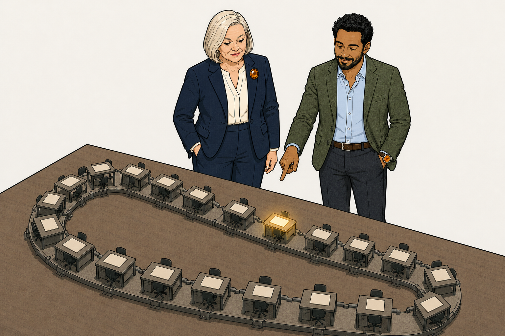
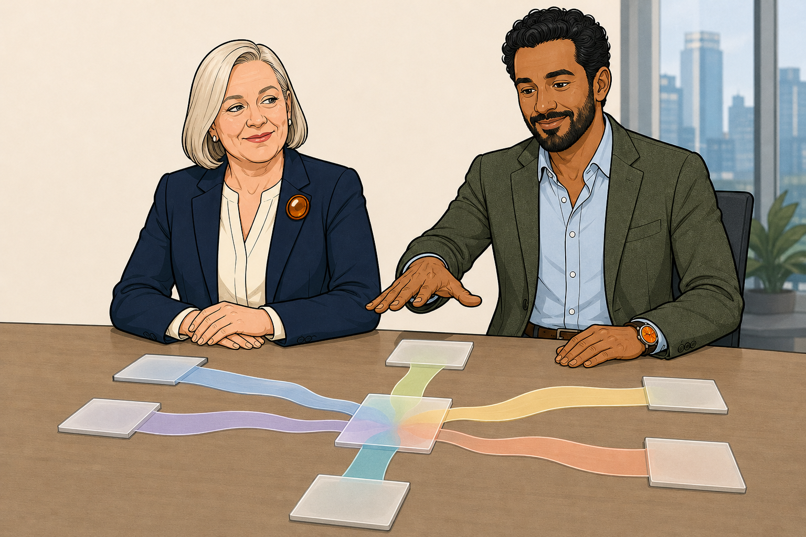
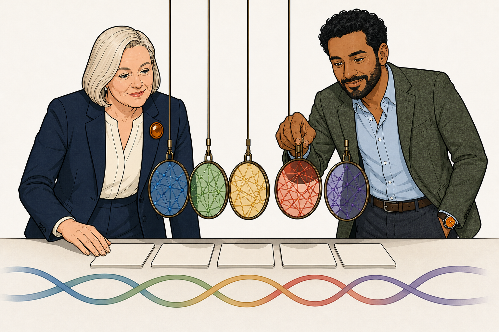
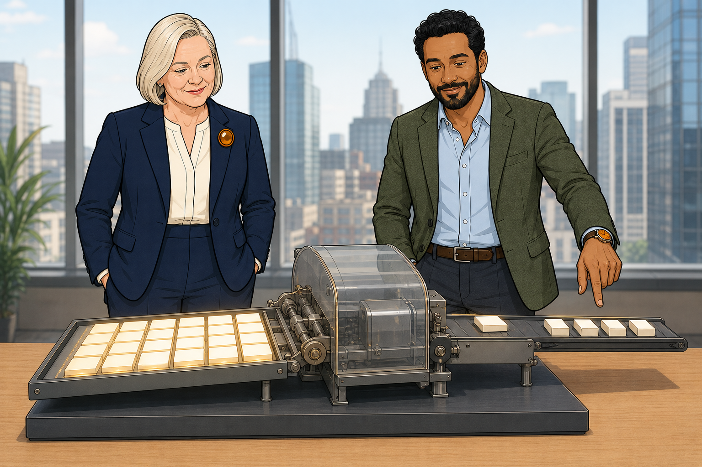
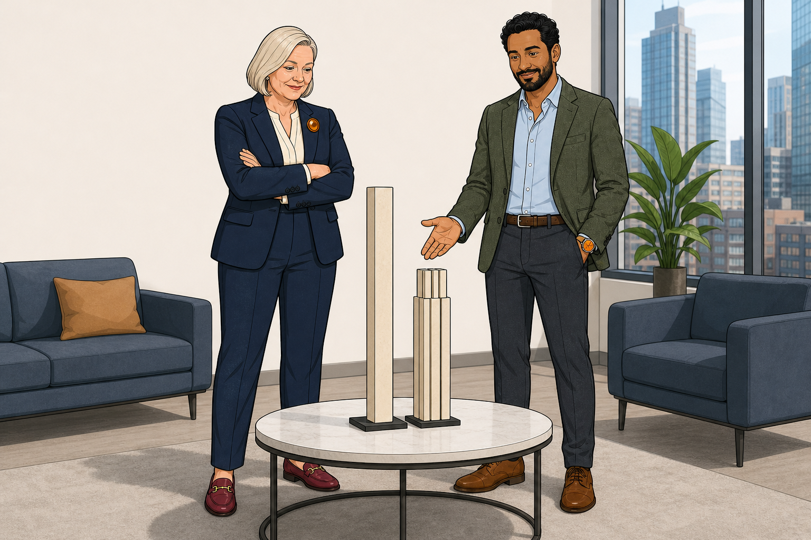
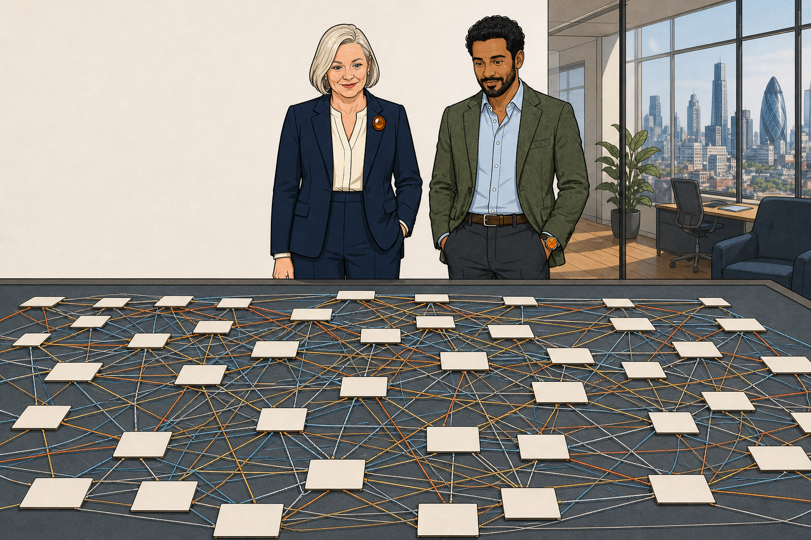

How the Transformer changed the economics of training translation systems—not the need for business judgement.
The bottleneck, then the breakthrough
A conference coffee break. Ingrid has one question the board will recognise.
Ingrid What changed here: the quality, the cost, or just the presentation?
Ravi Quality and training efficiency. For once, the presentation is not the breakthrough.

Many leading language systems processed a sentence in sequence. During training, each position depended on the previous step.
Ingrid A process where every desk waits for the desk before it. We have those.
The paper’s Transformer replaced that sequence-by-sequence processing with attention: direct connections between positions, without recurrent or convolutional layers.
Ravi Think shared review table, rather than a relay. Each piece can draw information directly from the others.
Ingrid An all-hands meeting with a defensible purpose. Bold.

Attention mixes information from other positions, giving more weight to what matches the current position’s needs.
Ravi Not every contribution gets equal weight. The system learns which connections are useful.
Ingrid So, unlike the budget meeting.

Several attention heads provide different views at once. Added position signals preserve information about the order of the pieces.
Ravi Several review lenses, plus a way to retain order—not just a bag of sentence pieces.

Training can handle positions in parallel. Producing a translation still proceeds one piece at a time.
Ingrid Faster training does not mean the finished translation appears all at once?
Ravi Correct. It still builds the answer in order, without peeking at future pieces.
Results, not a business case

On the WMT 2014 English-to-German translation test, the larger Transformer scored 28.4, versus 26.36 for the strongest previously reported result.
Ravi Higher is better on this translation measure. It beat even the previous combination of several models.
Ingrid Better output. A useful opening argument.
Both configurations trained on eight graphics processors. The paper also reported lower estimated training computation than competing systems.
Ravi The smaller model trained in 12 hours and scored 27.3. The larger took 3.5 days and scored 28.4.
Ingrid Different budgets, different quality. Now it sounds like an actual purchasing discussion.

There is a trade-off: comparing every position with every other position becomes costly as sequences grow longer.
Ingrid So inviting the whole document to the meeting is not free.
Ravi Exactly. The paper proposed investigating more local connections for very long sequences.
The experiments covered machine translation and English sentence-structure analysis—not company profits, operational savings or deployment risk.
Ingrid Evidence for a better technical engine. Not evidence that it can run my operations.
Ravi Precisely. The paper did not test your business case.
For Ingrid, the next step is a proposed pilot—not a conclusion from the paper.
Ingrid Test one document workflow. Compare turnaround, total cost and errors with today’s process. Keep human approval.
Ravi And agree the success criteria before the demonstration develops a personality.
The breakthrough removed a training bottleneck. The business decision still needs its own evidence.
Ingrid A better engine is a reason to test—not a reason to sign a blank cheque.